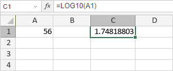

LOG10 funkcija
LOG10 funkcija je jedna od matematičkih i trigonometrijskih funkcija. Koristi se za vraćanje logaritma broja u bazi 10.
Sintaksa
LOG10(number)
LOG10 funkcija ima sledeći argument:
| Argument | Opis |
|---|---|
| number | Numerička vrednost za koju želite logaritamsku vrednost u bazi 10. Mora biti veća od 0. |
Napomene
Kako primeniti LOG10 funkciju.
Primeri
Slika ispod prikazuje rezultat koji vraća LOG10 funkcija.
